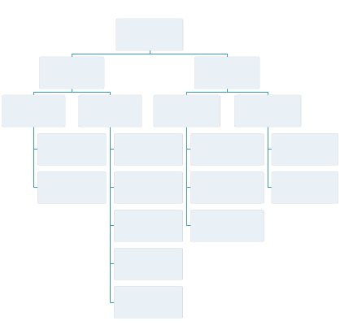
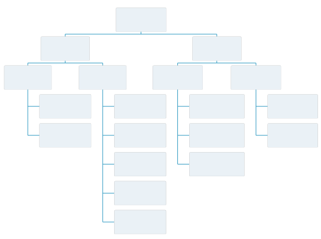

The layout can be configured by specifying the
layoutXPadding and
layoutYPadding style properties. These properties define the minimum
distance between items on the respective axes.
The following figure shows two examples: in the first,
the minimum distance between items is small; in the second, the minimum
distance is set to the default value (there is more space between
the items).

